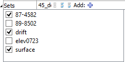
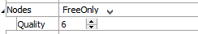
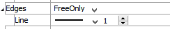
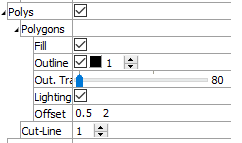

几何
说明
几何数据。几何数据可以从 DXF、STL、GEOM 或其他数据格式导入。此绘图项的前几个属性取决于第一个属性（contingent on the first attribute）（类型）。
属性
类型

将“标签”或“等值线”设置为在绘图项上着色。
按…着色/按…等值线

指定在绘图项中显示哪个标签或值（由上一项设置决定）。两者的选项如下表所示。某些选项需要额外的、动态提供的属性才能完成选择；这些选项在表中有标注说明。
| 按…着色 | 按…等值线 |
|---|---|
| 类型 | 节点额外变量 |
| 集合 | 额外变量 |
| 额外变量ᵉ | 场数据ᶠ |
| 分组ˢ |
| 图例说明： |
| ᶜ其后跟随一个“分量”属性 |
| ᵉ其后跟随一个“索引”属性 |
| ᶠ其后跟随“场数据”（及其他）属性 |
颜色列表/等值线
此位置显示的属性是 颜色列表 或 等值线，取决于“按…着色”的选择。详情请参见标准的 颜色列表（color-list） 控件说明和标准的 等值线（contour） 控件说明。
集合

从可用集合列表中控制各个集合的显示。
集合：这是集合列表中各项的容器。它还提供：用于向列表添加新集合名称的编辑字段（无论模型中是否存在该名称的集合）；“全不选”按钮；“全选”按钮；“反选”按钮；以及用于从文件添加新集合的“添加”按钮。
[Item]：显示该项（勾选时）。
节点

指定节点的显示方式。
节点：指定要显示哪些节点（选项为：“开启”、“关闭”、“仅自由”）。
质量：指定节点显示的质量（数值越大，节点越接近球形）。
边

指定边的显示方式。
边：指定要显示哪些边（选项：“开启”、“关闭”、“仅自由”）。
线：设置绘图项各边的线样式和粗细。
多边形

指定多边形的显示方式。
多边形：显示绘图项的多边形（勾选时）。
多边形：用于控制多边形渲染方式的设置容器。展开此控件可看到如下附加设置。
填充：勾选时渲染绘图项的填充。若取消勾选，则仅渲染线框。
轮廓：设置是否显示对象轮廓，并附有用于控制轮廓颜色和宽度的附加设置。
轮廓透明度：设置轮廓透明度（0 = 完全不透明；100 = 不可见）。
光照：设置是否使用位于观察者右肩上方的光源来渲染该项；这会使该项中离光源较近的部分比远离光源的部分显得更亮。
偏移：设置 OpenGL 多边形偏移的参数；如果多边形渲染效果不佳，将这些值设置得接近零可能会改善效果（第一个值是一个因子，指定用于为每个多边形创建可变深度偏移的比例因子，第二个值用于创建恒定的深度偏移）。
切割线：设置表示切面位置的线的粗细。
映射

根据所提供的设置变换绘图项的方向、位置或比例。例如，此属性允许将同一绘图项的多个不同可视化实例相邻渲染。
轴序：指定要使用的坐标变换，假定正常顺序为 {2D 中为 XY；3D 中为 XYZ}（例如，XZY 表示 Y 和 Z 坐标互换）。
平移：按指定的模型单位平移所渲染对象的 {2D 中为 \(x\) 和 \(y\)；3D 中为 \(x\)、\(y\) 和 \(z\)} 位置。
比例：将绘图项大小设为程序窗口大小的指定百分比。
透明度

设置绘图项的透明度。此设置不适用于二维模型对象。
透明度：为项目应用透明度（勾选时）。开启时，透明度设为默认值 70，并处于“锁定”状态。锁定时，可用的透明度范围被限制在 70（最低，略有透明）到 100（最高，完全不可见）。要访问完整的透明度取值范围（0-100），请按下锁形图标以“解锁”透明度范围；图标会随之改变（
）。
使用帮助按钮可获取有关此特定属性的帮助。
注意
应当提醒用户：低于 70 的值往往“更不透明”得难以察觉，并且可能导致深度透视看起来奇怪或不正确。
图例
设置该项在绘图图例中的显示。所有绘图项至少都具有 标题 属性。
图例：在图例中显示（勾选）有关该绘图项的所有信息。
标题：在图例中显示（勾选）该绘图项的标题。“别名：”字段可用于为该绘图项指定自定义标题。
大小：设置图例中文本的大小。
字体：设置文本所用的字体面。
样式：设置文本样式（选项为常规、粗体、斜体、粗斜体）。
颜色：设置文本颜色。
在 标题 下方，几何 绘图项还在 图例 中提供用于 映射 和 颜色列表（后者提供用于 标签 和 标题 的子控制项）的控制项。各自的子属性与 标题。 的子属性相同。
| 这些内容对您有帮助吗？… | FLAC3D © 2019, Itasca | 原文更新于 2020 年 10 月 8 日 |